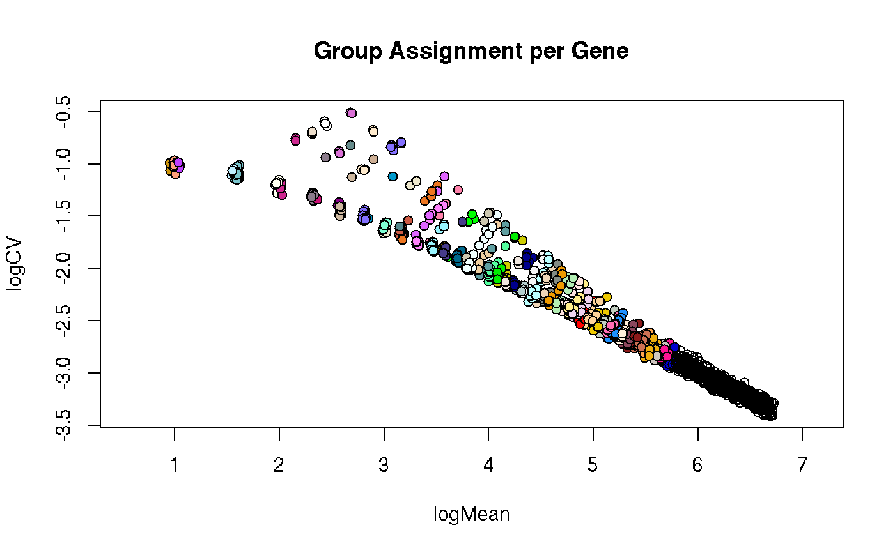

This function take the output from selVarGenes and plots the group or bin each
gene has been assigned to on the scatter plot showing the log2 coefficient of variation as a
function of the log2 mean.
plotSelVarGenesGroups( selVarGenes_list = NULL, xlab = "logMean", ylab = "logCV", main = "Group Assignment per Gene", asp = 1, ... )
| selVarGenes_list | the output list from the |
|---|---|
| xlab | label for x-axis. |
| ylab | label for y-axis. |
| main | title for plot. |
| asp | the y/x aspect ratio. |
| ... | additional parameters for the |
plot
# libraries library(SingleCellExperiment) # create example count matrix # ... poisson distr per gene mu <- ceiling(runif(n = 2000, min = 0, max = 100)) counts <- do.call(rbind, lapply(mu, function(x){rpois(1000, lambda = x)})) counts <- counts + 1 # ... add signal to subset of genes (rows) and cells (columns) i <- sample(x = 1:nrow(counts), size = 500) j <- sample(x = 1:ncol(counts), size = 500) counts[i, j] <- counts[i, j] + sample(5:10, length(i), replace = TRUE) # create SCE sce <- SingleCellExperiment(list(counts=counts)) # caclulate sizeFactors libsizes <- colSums(counts) sizeFactors(sce) <- libsizes/mean(libsizes) # select variable genes varGenes <- selVarGenes(sce)#>#># plot plotSelVarGenesGroups(varGenes)